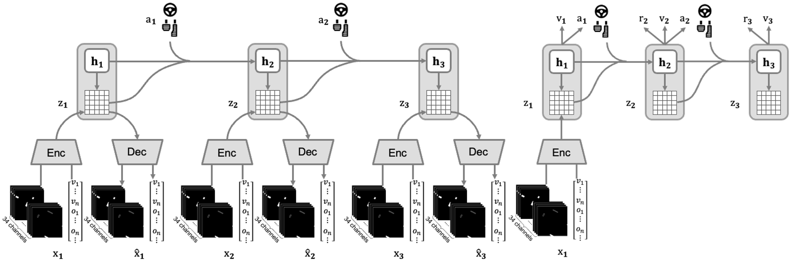

招生贴 - 复旦大学可信具身智能研究院贾萧松
方向：自动驾驶 · 具身智能 · 强化学习 · 世界模型
我们研究什么 & 为什么重要
我们聚焦自动驾驶、具身智能领域的核心科学问题： 如何让机器在纷繁复杂的物理世界中作出可靠、甚至超越人类的决策？我们聚焦这一核心科学问题，并围绕以下三条紧密交织的主线展开研究，最终目标是走向统一而通用的物理世界智能。
1. 端到端架构：我们探究“中间任务”的存在意义与极限——检测、预测、规划……究竟哪些中间表征能够真正辅助决策，而不沦为能力的天花板？我们希望设计可进化、可舍弃的“脚手架”，让系统在初期借力，后期又能自主突破。
2. 强化学习：不管是自动驾驶、机器人还是LLM/VLM领域，人们都发现让机器去模仿人类的行为（模仿学习，imitation learning）就像是鹦鹉学舌一样，知其然而不知其所以然。我们致力于用强化学习（奖励与惩罚）引导智能体在自主探索中提炼因果、发现捷径与反常识策略，从而获得真正可泛化的“所以然”。
3. 世界模型：真实世界的试错成本高昂乃至不可承受。我们研究借助生成式/重建式技术，以神经网络为笔、数据为墨，构建高保真、可交互的“数字孪生”——让智能体在仿真里摔跟头、长记性，再把经验迁移回物理世界。
三条主线彼此增强，世界模型提供廉价而丰富的试验场，强化学习在此恣意探索，端到端架构则随时修剪或重塑中间任务，确保能力持续向上、不设上限。我们的最终目标是把感知、预测、决策与生成融为一体，打造能在复杂物理世界中持续进化的统一智能体。
代表性工作
1. DriveTransformer （端到端架构）

DriveTransformer将所有的任务都抽象化为了Token，任务间的交互、时序的传递都可以直接使用Attention建模，让信息能够互通的同时不施加强约束，具有强拓展性。
2. Think2Drive （强化学习）

Think2Drive先构建可以潜在空间中进行推演的世界模型，随后使用强化学习，只需少量交互即可学会高性能驾驶策略，业内首次成功解决CARLA 2.0的所有任务。
3. Bench2Drive-R （世界模型）

Bench2Drive-R将生成式模型（Stable Diffusion）作为渲染器，构建了一个状态与渲染解耦的自回归仿真引擎，支持模型的自由探索。
欢迎各阶段学生加入
- 本科生（大一/大二）：科研实习/长期助研，手把手带入门人工智能、科研流程，准备进入科研产出节奏，为保研/出国做准备
- 本科生（大三/大四）：课题/论文方向实习，完成自己的项目
- 硕士/博士生：2025年九推仍有名额，请报考智能机器人与先进制造创新学院，可信具身智能研究院
我们能给你
- 手把手带入门人工智能知识、科研思维、完成项目、发表论文全流程
- 丰富的idea与科研资源
- 人工智能时代科研工作者的个人经验与思考
- 复旦/交大/科大等学校的硕博机会，大厂实习/全职工作机会
申请流程
- 准备简历（含GPA、排名、AI相关课程与经历）
- 发送至 jiaxiaosong@fudan.edu.cn
- 经历/科研讨论
- 开始科研~